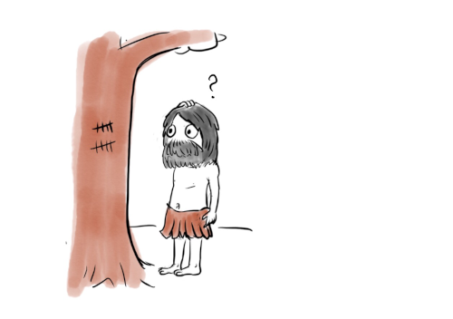
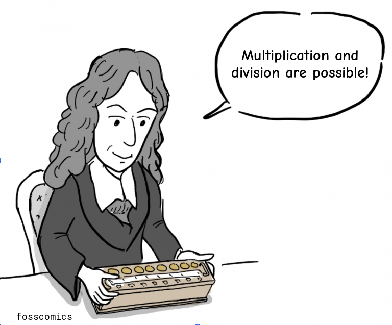
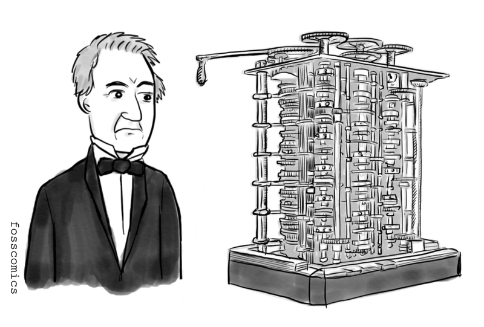
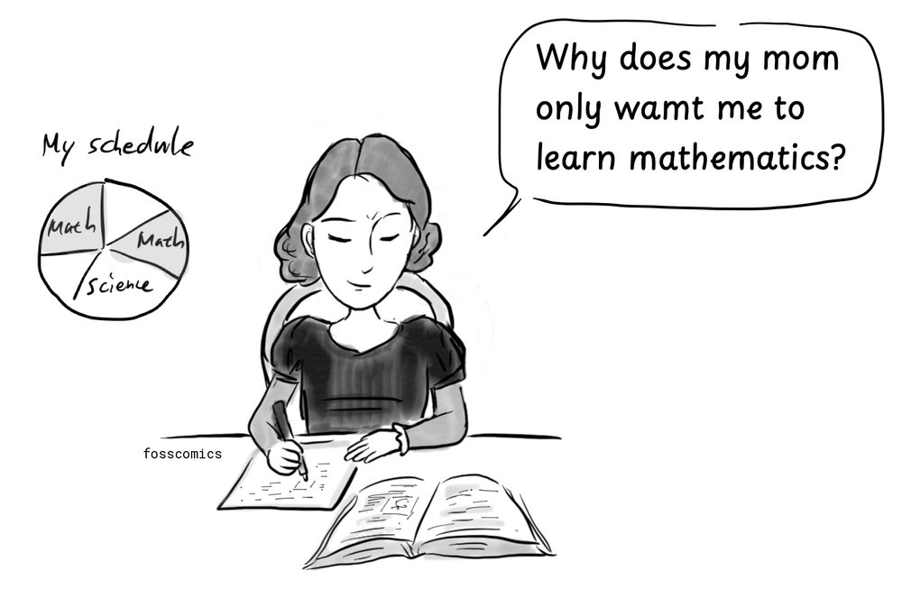
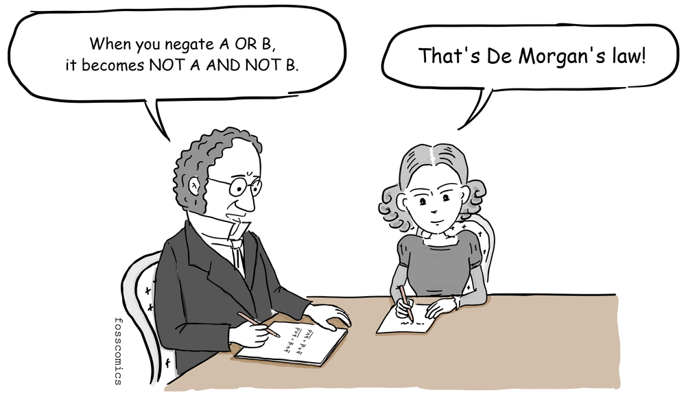
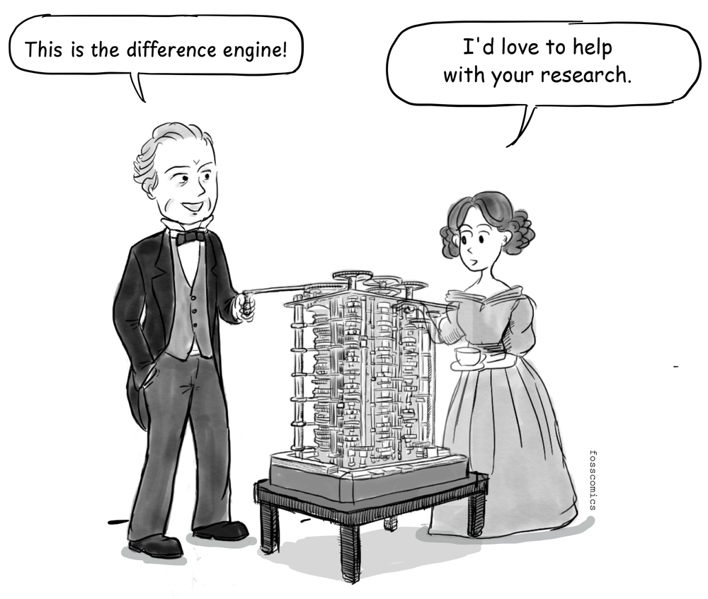
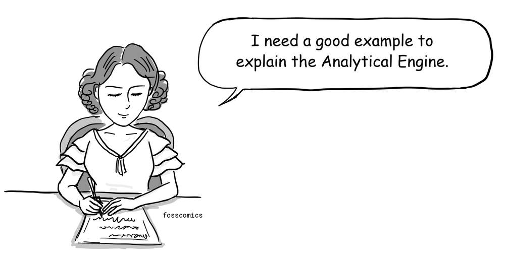
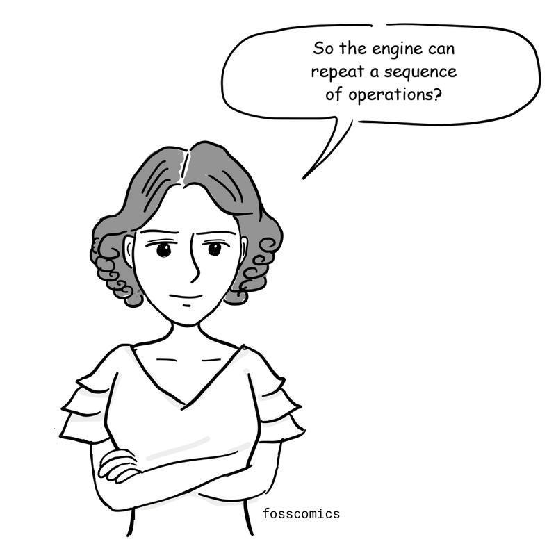
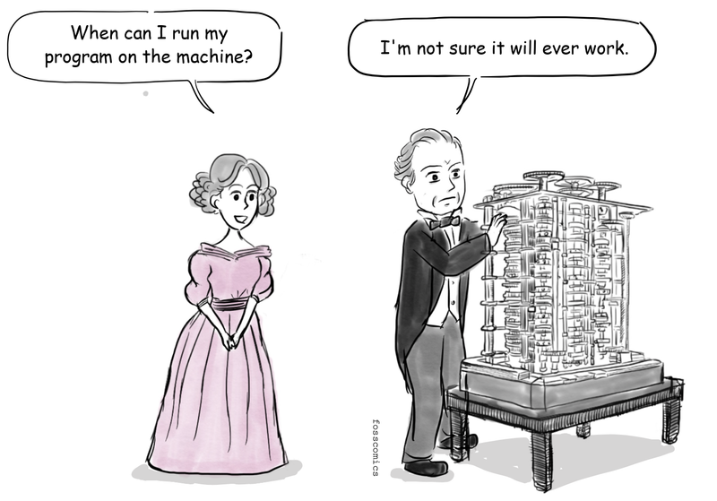
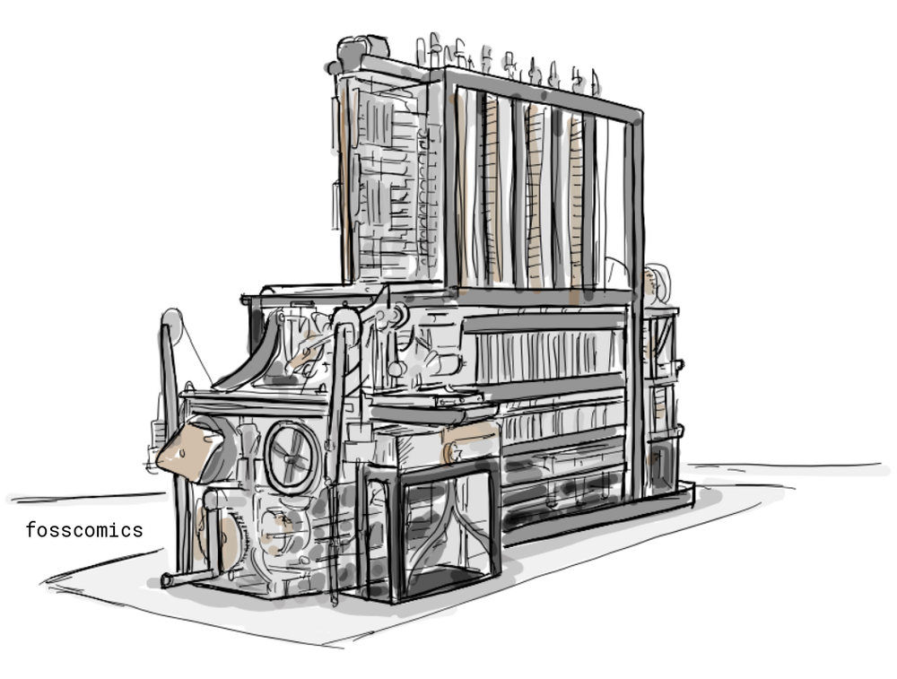

1. Charles Babbage and Ada Lovelace
Human beings have made a number of tools to make math calculations more convenient and accurate. One of these tools, the abacus, was used by several ancient civilizations.

In Korea, the abacus was introduced from China around the 1400s, and it was used by individuals as well as banks until the 1980s. After that, computers replaced it in banks and it is hardly used for personal use anymore.
In 17th-century Europe, Pascal and Leibniz built gear-driven mechanical calculators.

"Multiplication and division are possible!"
Charles Babbage and his difference engine
In 1822, British mathematician Charles Babbage proposed the Difference Engine, a mechanical calculator designed to automatically produce accurate numerical tables, such as logarithmic and trigonometric tables. He later designed the Analytical Engine, a general-purpose mechanical machine with a memory or "store", an arithmetic unit or "mill", punched-card input, and a printer, anticipating several components of modern computers.

Ada Lovelace was born in 1815 to George Gordon Byron (better known as Lord Byron), a leading English Romantic poet, and Anne Isabella Milbanke. She grew up with her mother because her father had abandoned the family. Since her mother was concerned that Ada might inherit Byron's temperament, she encouraged Ada to study mathematics and logic rather than poetry.

"Why does my mom only want me to learn mathematics?"
Ada studied with prominent mathematicians, including Augustus De Morgan, who recognized her talent.

"When you negate A OR B, it becomes NOT A AND NOT B."
"That's De Morgan's law!"
At seventeen, Ada met Babbage and later saw him demonstrate the completed portion of his Difference Engine.

"This is the difference engine!"
"I'd love to help with your research."
To help explain the Analytical Engine, she presented an algorithm for calculating Bernoulli numbers in her published notes. It is often described as the first published computer program.

"I need a good example to explain the Analytical Engine."
Her notes described how the Analytical Engine could repeat a series of operations, an early account of looping. This work is why she is often called the first computer programmer. However, historians debate how much of the Bernoulli-number algorithm originated with Lovelace and how much was developed in collaboration with Babbage. Whatever the precise division of credit, Lovelace's notes remain one of the earliest published examples of programming.

"So the engine can repeat a sequence of operations?"
In recognition of her pioneering contribution, the programming language Ada was later named after her.
with Ada.Text_IO;
procedure Hello is
begin
Ada.Text_IO.Put_Line ("Hello, world!");
end Hello;A "Hello, world!" program written in Ada.
Babbage completed neither the Difference Engine nor the Analytical Engine during Lovelace's lifetime because of financial, organizational, and technical difficulties. As a result, her program was never run on the proposed machine.

"When can I run my program on the machine?"
"I'm not sure it will ever work."
In 1991, the Science Museum in London completed the calculating section of a working Difference Engine No. 2 based on Babbage's designs. Its printing mechanism followed in 2002. The engine could calculate results to 31 digits. Lovelace's notes remain an important early account of how a general-purpose computing machine could be programmed.
